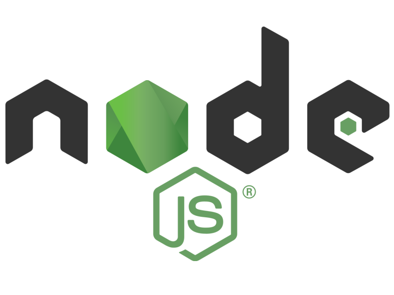

<!DOCTYPE html>
<html lang="en">
  <head>
    <meta charset="utf-8" />
    <meta name="viewport" content="width=device-width, initial-scale=1.0, maximum-scale=1.0, user-scalable=no" />

    <title>Занятие 49</title>
    <link rel="shortcut icon" href="./../favicon.ico" />
    <link rel="stylesheet" href="./../dist/reset.css" />
    <link rel="stylesheet" href="./../dist/reveal.css" />
    <link rel="stylesheet" href="./../dist/theme/white.css" id="theme" />
    <link rel="stylesheet" href="./../css/highlight/base16/zenburn.css" />

    <link rel="stylesheet" href="./../_assets/.reveal-md/styles.css" />


    <script>
      document.write(
        '<script src="http://' +
          (location.host || 'localhost').split(':')[0] +
          ':35729/livereload.js?snipver=1"></' +
          'script>'
      );
    </script>
  </head>
  <body>
    <div class="reveal">
      <div class="slides"><section ><section data-markdown><script type="text/template">

# OTUS

## Javascript Basic

</script></section><section data-markdown><script type="text/template">



</script></section></section><section ><section data-markdown><script type="text/template">

### План занятия

- краткое описание встроенных модулей **node.js**
- примеры использования **os**/**fs**
- практика работы с **inquirer**
- практика работы с **commander**

</script></section><section data-markdown><script type="text/template">

### Архитектура Node.js


</script></section><section data-markdown><script type="text/template">

### [Встроенные модули Node.js](https://nodejs.org/dist/latest-v14.x/docs/api/)

- [Crypto](https://nodejs.org/dist/latest-v14.x/docs/api/crypto.html)
- [Buffer](https://nodejs.org/dist/latest-v14.x/docs/api/buffer.html)
- [Process](https://nodejs.org/dist/latest-v14.x/docs/api/process.html)
- [File System](https://nodejs.org/dist/latest-v14.x/docs/api/fs.html)
- [HTTP](https://nodejs.org/dist/latest-v14.x/docs/api/http.html)/[HTTPS](https://nodejs.org/dist/latest-v14.x/docs/api/https.html)/[HTTP2](https://nodejs.org/dist/latest-v14.x/docs/api/http2.html)
- [Os](https://nodejs.org/dist/latest-v14.x/docs/api/os.html)
- [Path](https://nodejs.org/dist/latest-v14.x/docs/api/path.html)
- [Readline](https://nodejs.org/dist/latest-v14.x/docs/api/readline.html)
- [Stream](https://nodejs.org/dist/latest-v14.x/docs/api/stream.html)
- ...

</script></section><section data-markdown><script type="text/template">

### [OS](https://nodejs.org/dist/latest-v14.x/docs/api/os.html)

Модуль предоставляет служебные методы и свойства, относящиеся к операционной системе.

```js
const os = require("os");
```

</script></section><section data-markdown><script type="text/template">

## Примеры

</script></section><section data-markdown><script type="text/template">

### [File System](https://nodejs.org/dist/latest-v14.x/docs/api/fs.html)

Данный модуль позволяет взаимодействовать с файловой системой способом, смоделированным на основе стандартных функций POSIX.

```js
const fs = require("fs");
```

</script></section><section data-markdown><script type="text/template">

### Классы модуля FS

- fs.Dir
- fs.Dirent
- fs.StatWatcher
- fs.ReadStream
- fs.Stats
- fs.WriteStream

**FS Promise API** предоставляет дополнительный класс `FileHandle`

</script></section><section data-markdown><script type="text/template">

## Примеры

</script></section><section data-markdown><script type="text/template">

### [Inquirer](https://www.npmjs.com/package/inquirer)

Встраиваемый CLI интерфейс для `Node.js`.
**Inquirer** позволяет осуществлять множественные настраиваемые запросы на ввод пользователем, проверять полученные ответы, а также получать обратную связь в случае ошибочного ввода.

</script></section><section data-markdown><script type="text/template">

## Практика использования

</script></section><section data-markdown><script type="text/template">

### [Commander](https://www.npmjs.com/package/commander)

Продвинутая утилита для работы с CLI Node.js. Позволяет гибко настраивать работу с аргументами, переданными командной строке и создавать на их основе исполняемые команды

</script></section><section data-markdown><script type="text/template">

## Практика использования

</script></section><section data-markdown><script type="text/template">

## Спасибо за внимание!
</script></section></section></div>
    </div>

    <script src="./../dist/reveal.js"></script>

    <script src="./../plugin/markdown/markdown.js"></script>
    <script src="./../plugin/highlight/highlight.js"></script>
    <script src="./../plugin/zoom/zoom.js"></script>
    <script src="./../plugin/notes/notes.js"></script>
    <script src="./../plugin/math/math.js"></script>
    <script>
      function extend() {
        var target = {};
        for (var i = 0; i < arguments.length; i++) {
          var source = arguments[i];
          for (var key in source) {
            if (source.hasOwnProperty(key)) {
              target[key] = source[key];
            }
          }
        }
        return target;
      }

      // default options to init reveal.js
      var defaultOptions = {
        controls: true,
        progress: true,
        history: true,
        center: true,
        transition: 'default', // none/fade/slide/convex/concave/zoom
        plugins: [
          RevealMarkdown,
          RevealHighlight,
          RevealZoom,
          RevealNotes,
          RevealMath
        ]
      };

      // options from URL query string
      var queryOptions = Reveal().getQueryHash() || {};

      var options = extend(defaultOptions, {"slideNumber":true,"hash":true,"history":false,"backgroundTransition":"fade","width":"80%"}, queryOptions);
    </script>


    <script>
      Reveal.initialize(options);
    </script>
  </body>
</html>
